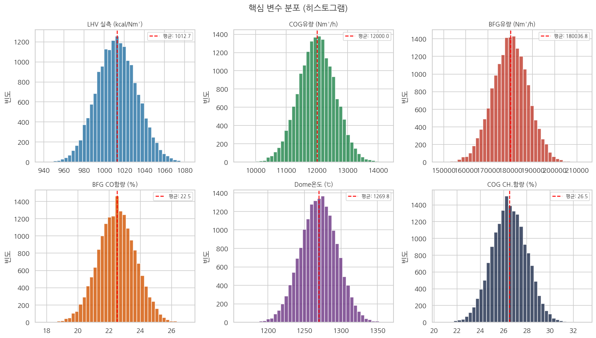
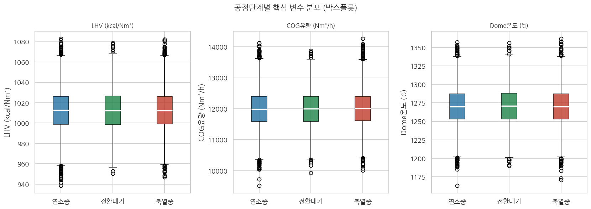
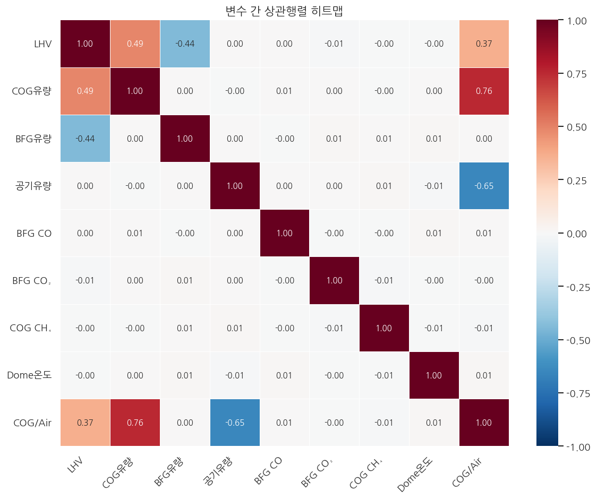
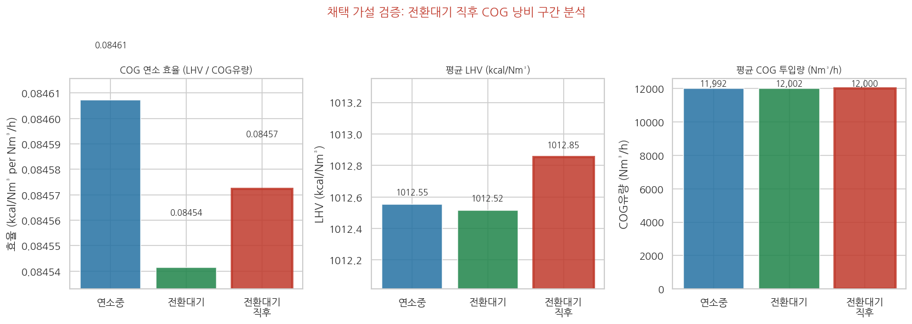
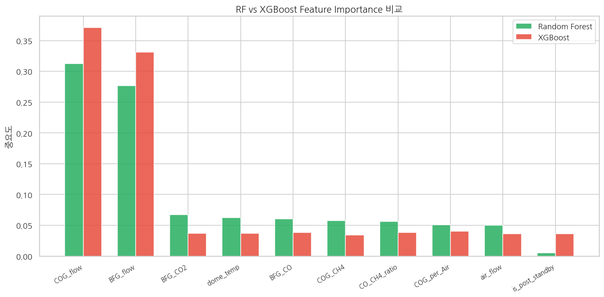
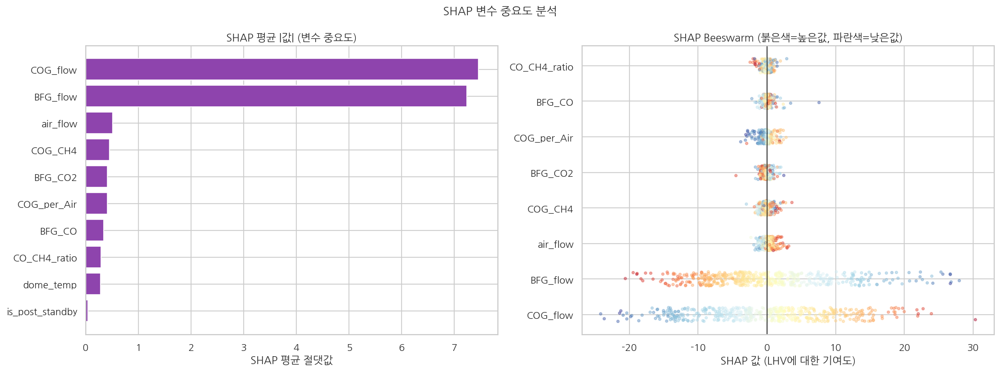
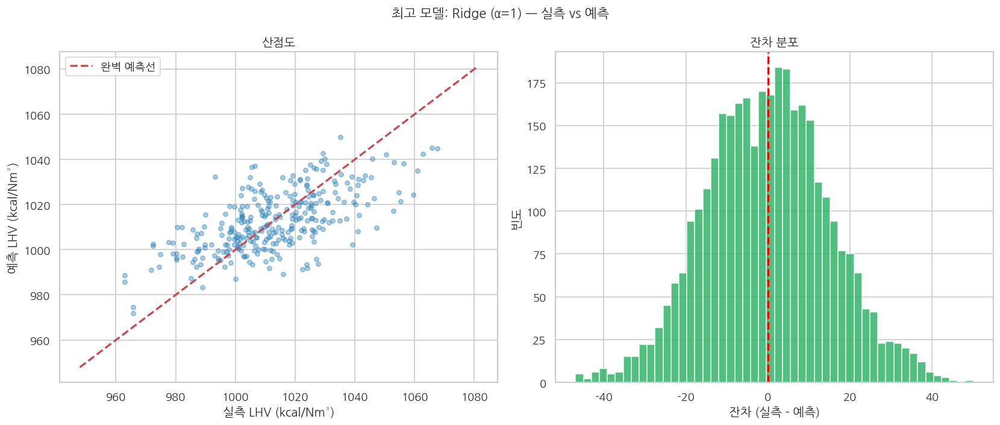
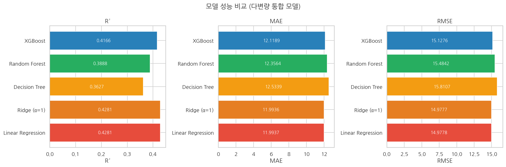
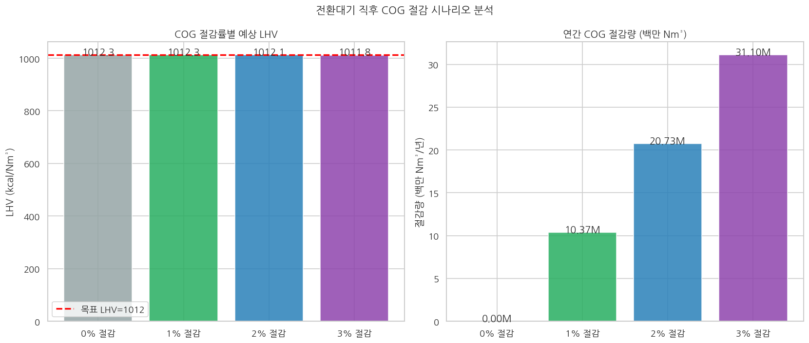

고로 열풍로의 LHV(저위발열량)를 5분 주기로 예측하는 ML 모델 개발, 그리고 데이터가 스스로 드러낸 한 가지 구조적 낭비 패턴.
60일간 5분 간격 17,280행의 실시간 조업 데이터를 기반으로, Ridge 회귀 모델(MAE 11.99)로 LHV를 예측하고, SHAP 분석으로 COG·BFG 유량이 핵심 제어 변수임을 검증했다. 목표 LHV(1,012 kcal/Nm³) 대비 오차 1.18% — 현장 ±15 경보 기준에서 실용 가능 수준.
열풍로는 연소중 → 축열중 → 전환대기를 반복한다. 목표 LHV는 1,012 kcal/Nm³ (±15). 이 범위를 벗어나면 연료 과잉 소모 또는 선철 품질 저하가 발생한다.
상관분석 결과 — COG 유량(r=+0.49), BFG 유량(r=−0.44)이 주요 제어 변수. Dome 온도·공정 단계는 r≈0으로 예측력 없음.

LHV 정규분포(σ=19.8) · COG유량 11,000~13,000 Nm³/h 집중 · 결측치 없음

공정단계 무관 유사 분포 · 공정단계 단독으로는 예측력 미미

COG r=+0.49 · BFG r=−0.44 · 혼합가스↔BFG r=0.995 → 혼합가스유량 제거
가설 4개를 수립해 통계 검증을 수행했다. H1(BFG CO함량) · H2(Dome 온도) · H3(파생변수)는 기각. H4(전환대기 직후 COG 과잉 투입)만 채택됐다.
채택된 H4 → is_post_standby 이진 플래그 파생 → 전환대기 직후 COG 2% 절감 시나리오 (연 1.24M Nm³).

상관계수(r), RF Feature Importance, XGBoost SHAP — 세 분석 모두 COG유량(1위)·BFG유량(2위)으로 수렴. COG(4,400 kcal/Nm³)가 BFG(750 kcal/Nm³) 대비 약 6배 발열량을 가지는 물리 특성과 완전히 일치한다.


COG·BFG 유량과 LHV 사이의 강한 선형 관계가 비선형 트리의 복잡도를 무력화했다.
처음엔 Ridge가 1위라는 결과를 의심했다. 하지만 데이터 구조를 먼저 이해하는 것이 모델 복잡도보다 우선이라는 걸 체감했다.

잔차 분포가 정규분포에 가까움 — 체계적 편향 없음.

| 순위 | 모델 | Train MAE | Test MAE | R² |
|---|---|---|---|---|
| ★ 1 | Ridge (α=1) | 11.84 | 11.99 | 0.428 |
| 2 | Linear Regression | 11.84 | 11.99 | 0.428 |
| 3 | XGBoost | 9.21 | 12.12 | 0.417 |
| 4 | Random Forest | 4.18 | 12.36 | 0.389 |
| 5 | Decision Tree | 0.00 ⚠ | 12.53 | 0.363 |
Decision Tree Train MAE 0.00 → 완전 과적합. 단순한 모델이 항상 더 나쁜 건 아니다.
Dome온도를 보고 연료를 조절하는 운전원의 경험적 방식은 결과를 보고 원인을 추측하는 역방향이었다. 데이터가 그것을 권고했고, COG 유량이 진짜 원인임을 세 가지 분석이 동시에 가리켰다.
